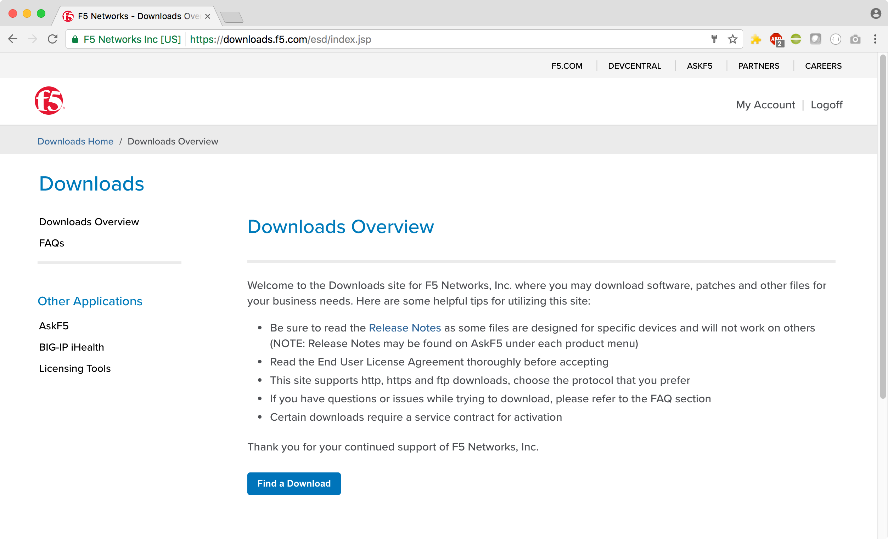
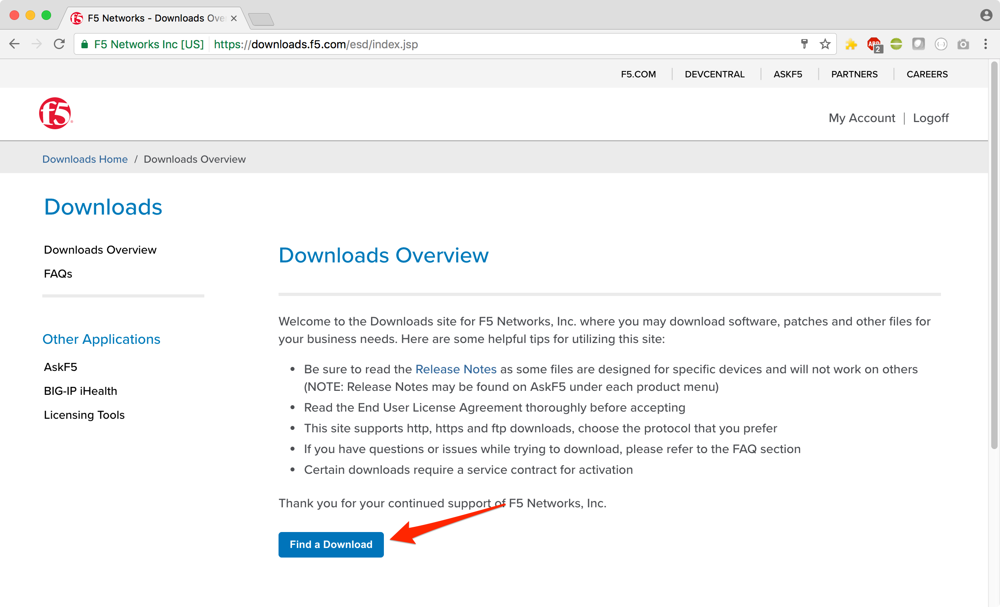

2.1.1. Lab – Download the BIG-IP Virtual Edition Image¶
Todo
Needs lab description
This lab will teach you how to download the BIG-IP Virtual Edition image to your system.
2.1.1.1. Task – Open a Web Browser¶
Todo
Needs task description
In this task you will open a web browser and navigate to the F5 Networks Downloads site.
Note
An account is required to download software. You can create one at https://login.f5.com/resource/registerEmail.jsp
Follow these steps to complete this task:
Open your web browser
Navigate to https://downloads.f5.com
Login with your username and password.
After logging in you should see the following window:

2.1.1.2. Task – Download the Image¶
Todo
Needs task description
In this task we will download the F5 Networks BIG-IP Virtual Edition image to your system
Follow these steps to complete this task:
Click the ‘Find a Download’ button.
Click the link that contains the BIG-IP TMOS software version you would like to download.
Important
Be sure to click a link that has “Virtual Edition” in the name
Find the image appropriate for your hypervisor
Download the image and save it to you local system